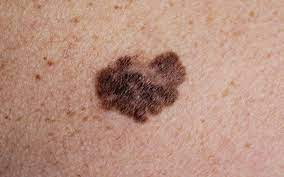

-a type of skin cancer that develops when melanocytes(cells that give skin melanin) start to grow out of control.
-These cells are in the deep layer of the epidermis. This skin cancer is dangerous because of its ability to spread to other organs rapidly if left unchecked.

-Presents itself as a spot of brown, black, or red color. Remember the ABCDEs of identifying melanoma
- Asymmetry-the spot is different on each
- Border-unusual border, for example a scalloped border
- Color-irregular color ex. Blue and red in one spot, dark tan in another
- Diameter-the diameter is larger than that of your standard pencil eraser
- Evolving-rapidly evolves, changing color, shape, and growing and shrinking over time
-Only 20-30% of melanomas are found in existing moles. While 70-80% arise on normal-looking skin. This makes it harder to identify melanoma.
Occurs: When skin is exposed to ultraviolet (UV) radiation, it causes skin damage that triggers the melanocytes to produce more melanin, but only the melanin pigment attempts to protect the skin by causing the skin to darken or tan. Melanoma occurs when DNA damage due to UV radiation triggers mutations in the melanocytes, resulting in uncontrolled cellular growth.